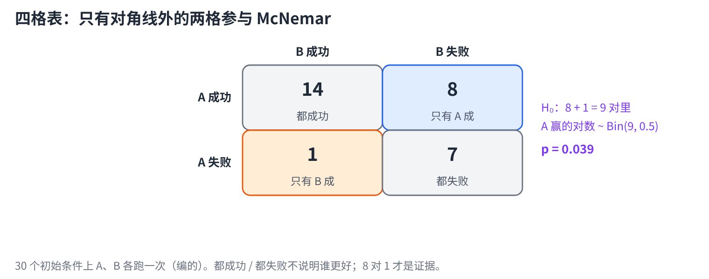
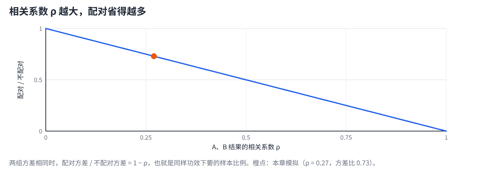
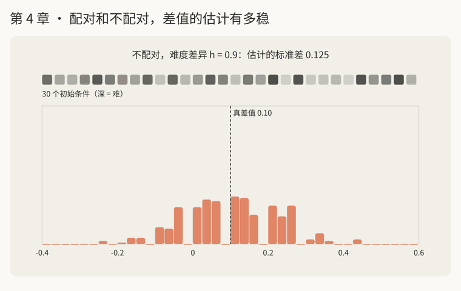

第 4 章 · 配对比较：同一批初始条件交替跑，省下一半样本
本地运行
git clone https://github.com/wikieden/math-and-eval-stats
cd math-and-eval-stats/code/notebooks
pip install jupyterlab torch numpy
jupyter lab ch04_paired_comparison.ipynb也可以下载后直接用 VS Code 打开 .ipynb 运行。需要 GPU 的章节在 Colab 里选「代码执行程序 → 更改运行时类型 → GPU」。
本章回答：两个策略在同一批初始条件上各跑一次，和各自随便找 30 个初始条件跑，统计上有什么不同？为什么同样的数据，配对检验能显著、不配对检验却不能？
讲解日期：2026-11-25 · 上一章：第 3 章 要测多少次 · 下一章：第 5 章 Bootstrap 与 Beta 后验
对应原文：Miller《Adding Error Bars to Evals》§4.2materials/text/papers/adding-error-bars-to-evals-2411.00640.txtL325–L384（式 (7) 配对标准误、方差减少）；NIST e-Handbook §7.3.1.1materials/text/web/nist/prc311.txtL14–L82（配对观测）；Kress-Gazit 等materials/text/papers/robot-eval-best-practices-2409.09491.txtL174–L181（对齐初始条件、交替盲测）
本章缩写：IC = Initial Condition（初始 / 条件：物体摆放、光照等开局状态）；Cov = covariance（协方差）；ρ（rho）= 相关系数；McNemar 检验 = 以统计学家 Quinn McNemar 命名的配对比例检验；b、c = 四格表里不一致的两格。全部缩写见 附录 · 缩写与术语表
讲解
第一步：配对 = 两个策略面对同一道题（2026-11-25）
类比：两个学生考同一张卷子 vs 各考各的卷子。 各考各的，分数差里混着"卷子难易"的差别；考同一张卷子，卷子难度对两人一样，分数差就只反映水平。
机器人评测里，"卷子"就是初始条件：杯子放在哪、光线怎样、桌上有没有干扰物。Kress-Gazit 等建议（L174–L181）：
- 用图像叠加或桌面标记，让两个策略的初始条件尽量一样；
- 同一个时段交替跑 A、B，评测人不知道当前是哪个策略（盲测），避免光照漂移和评测人偏见。
做到了这两点，数据就是配对的：第 i 个初始条件上有一对结果 (A_i, B_i)（NIST §7.3.1.1 的定义，L31–L35）。
例子（编的，30 个初始条件）：
| B 成功 | B 失败 | |
|---|---|---|
| A 成功 | 14（都成功） | 8（只有 A 成） |
| A 失败 | 1（只有 B 成） | 7（都失败） |
A 成功 22/30，B 成功 15/30。
一句话：配对 = 两个策略在同一个初始条件上比；它把"这道题难不难"从比较里扣掉了。
第二步：当成不配对，信息被浪费了（2026-11-25）
类比：只看两人的总分，不看每道题谁对谁错。
把上面的数据当成两组独立样本，做第 2 章的双比例 z 检验：
| 算什么 | 结果 |
|---|---|
| 差值 | 22/30 − 15/30 = 0.233 |
| z | 1.859 |
| p | 0.063（不显著） |
这个检验的标准误里，包含了"30 个初始条件有难有易"带来的波动。可这部分波动对 A、B 是一样的，本不该算进差值的不确定性里。
一句话：配对数据当成独立数据检验，初始条件难易的波动被算进了误差，结论过于保守。
第三步：McNemar 检验：只看不一致的那几对（2026-11-25）
类比：两个学生考同一张卷子，都对或都错的题说明不了谁强，只有"一个对一个错"的题有信息。
在 H₀（两个策略一样好）下，不一致的 b + c = 9 对里，"A 赢"和"B 赢"应该各占一半：
| 方法 | 统计量 | p |
|---|---|---|
| 精确检验：9 对里 A 赢 8 对 | — | 0.039 |
| 卡方（连续性校正）\((\lvert b - c\rvert - 1)^2/(b + c)\) | \((7 - 1)^2/9 = 4.00\) | 0.046 |
同一组数据，配对检验在 5% 水平上显著，不配对检验不显著。原因不是换了个公式，而是配对检验用上了"同一个初始条件"这条信息。

图 4-1 · 灰色的"都成功 / 都失败"不提供 A、B 谁好的信息；蓝、橙两格（8 对 1）才是证据一句话：McNemar 只看不一致的对，H₀ 下"A 赢"的对数服从 Binomial(b + c, 0.5)。
第四步：配对为什么省：方差里减掉了 2Cov（2026-11-25）
类比：两个人走同一条颠簸的路，比谁走得快，路的颠簸对两人一样，可以抵消。
差值的方差：
不配对时 A、B 来自不同的初始条件，Cov = 0；配对时同一个初始条件对两者都难或都易，Cov > 0，这一项就被减掉了（Miller §4.2 L340–L384）。两组方差相同、相关系数为 ρ 时：
| ρ | 配对方差 / 不配对方差 | 同样功效要的样本 |
|---|---|---|
| 0 | 100% | 一样多 |
| 0.3 | 70% | 少 30% |
| 0.5 | 50% | 少一半 |
例子（代码）：
- 第一步的数据：配对标准误（Miller 式 (7)：差值 \(d_i = A_i - B_i\) 的标准差 / √n）= 0.0920；不配对标准误 = 0.1219；
- 模拟"初始条件有难有易"：每个 IC 一个难度 u，A 的成功率 0.95 − 0.9u，B 的 0.85 − 0.9u。A、B 结果的相关系数 0.270，配对方差是不配对的 73%。

图 4-2 · 横轴 ρ，纵轴配对 / 不配对的方差比（= 样本量比）；初始条件难度差异越大，ρ 越大场景代码：statsmodels 里的 McNemar（真实库的写法；本书环境没装 statsmodels，没跑过）：
from statsmodels.stats.contingency_tables import mcnemar
table = [[14, 8], # A 成功：B 成功 14，B 失败 8
[1, 7]] # A 失败：B 成功 1，B 失败 7
print(mcnemar(table, exact=True).pvalue) # 只用 8 和 1 两格
一句话：Var(A − B) = Var(A) + Var(B) − 2Cov；配对让 Cov > 0，方差按 1 − ρ 缩小，同样的功效少测很多次。
动画演示：配对和不配对的差值分布

可交互版：animations/04-paired-comparison.html（滑块调初始条件难度差异；勾选"配对"）。
怎么看：
- 左边一排方块是 30 个初始条件，颜色深浅是难度；每个方块上下两点是 A、B 的结果（第一步）；
- 不勾配对：A、B 各自用不同的初始条件，差值的直方图很宽（第二步）；
- 勾上配对：同一个方块上比，直方图变窄（第四步）；
- 把难度差异调大：配对的好处越来越明显，右上角显示 ρ 和方差比。
练习与作答记录
题 1（第三步 McNemar）：40 个初始条件上，A 成 B 败 10 次，A 败 B 成 3 次。用精确检验的思路写出 p 值的算式（不必算到小数），说说"都成功"和"都失败"的次数为什么不出现在算式里。
作答：（待作答）
题 2（第四步 方差）：两个策略在同一批初始条件上的结果相关系数 ρ = 0.4。和不配对相比，同样功效下配对能省多少样本？
作答：（待作答）
题 3（第一步 设计）：你有两台机器人、一个下午、两个策略要比。给出一个让数据成为"配对"的评测流程（谁摆放、谁评分、按什么顺序跑）。
作答：（待作答）
口诀
同一张卷子比高低，初始条件对齐还要交替盲测；
当成独立来检验，难易波动白算进误差；
McNemar 只看一对一错，H₀ 下一半对一半；
方差减掉两倍协方差，相关 ρ 越大省得越多。
本章复习卡片
ST34（配对数据的定义和为什么省：Var(A − B) 公式）、ST35（McNemar 检验只看不一致的对，H₀ 下的分布）。练习做完后，按答错、卡住的地方补上。
附录 · 延伸阅读
留给以后深入学习用，不影响本章主线。★ 是建议先读的。
推荐阅读
| 读什么 | 读哪里 | 读它为了什么 |
|---|---|---|
| ★ Miller《Adding Error Bars to Evals》 | §4.2 L325–L384 | 式 (7) 配对标准误；配对方差减少量的推导 |
| ★ Kress-Gazit 等《Robot Learning as an Empirical Science》 | L174–L185；§6.4 | 对齐初始条件、交替盲测、评测人和示范人分开 |
| NIST e-Handbook §7.3.1.1 | prc311.txt L14–L82 |
配对观测的定义和配对 t 检验 |
| Miller 2024 | §5 式 (9) 的 ω² 项 | 第 3 章样本量公式里怎么体现配对：ω² = Var(A) + Var(B) − 2Cov |
数学原理
- 方差的展开：\(\mathrm{Var}(X - Y) = \mathbb E[(X - Y - \mathbb E[X - Y])^2] = \mathrm{Var}(X) + \mathrm{Var}(Y) - 2\mathrm{Cov}(X, Y)\)。独立时 Cov = 0（第 8 章）。
- McNemar 为什么只看 b、c：差值 \(d_i\) 只在不一致的对上非零；在 H₀（\(P(A成B败) = P(A败B成)\)）下，给定不一致对的总数，b 服从参数 0.5 的二项分布。
- 相关系数：\(\rho = \mathrm{Cov}(A, B)/\sqrt{\mathrm{Var}(A)\mathrm{Var}(B)}\)；方差相等时 \(\mathrm{Var}(A - B) = 2\sigma^2(1 - \rho)\)，不配对是 \(2\sigma^2\)。
公式清单
| 公式 | 意思 |
|---|---|
| \(\mathrm{Var}(A - B) = \mathrm{Var}(A) + \mathrm{Var}(B) - 2\mathrm{Cov}(A, B)\) | 差值的方差 |
| \(SE_{\text{paired}} = \sqrt{\mathrm{Var}(d)/n}\) | Miller 式 (7) |
| \(b \sim \text{Binomial}(b + c, 0.5)\) | McNemar 精确检验 |
| \((\lvert b - c\rvert - 1)^2/(b + c) \sim \chi^2_1\) | McNemar 卡方（连续性校正） |
| 配对 / 不配对方差 \(= 1 - \rho\) | 等方差时省下的比例 |
代码对照：把本章的数字用代码算一遍
代码在仓库本地
math-and-eval-stats/solutions/chapter-code/ch04_paired.py，配套测试tests/test_ch04.py：
bash cd math-and-eval-stats/solutions/chapter-code uv run python ch04_paired.py uv run pytest tests/test_ch04.py
讲义 ↔ 代码：
| 讲义 | 公式 | 写法 | 跑出来 |
|---|---|---|---|
| 第二步 不配对 | 双比例 z | unpaired_z(22, 30, 15, 30) |
z = 1.859，p = 0.063 |
| 第三步 精确 | Binomial(9, 0.5) | mcnemar_exact(8, 1) |
0.039 |
| 第三步 卡方 | 连续性校正 | mcnemar_chi2(8, 1) |
4.00，p = 0.046 |
| 第四步 配对 SE | 式 (7) | paired_se(table_to_diffs(TABLE)) |
0.0920 |
| 第四步 模拟 | 难度 u | simulate_difficulty() |
ρ = 0.270，方差比 0.730 |
关键几行：
p = binomtest(b, b + c, 0.5).pvalue # McNemar 精确：不一致的对里 A 赢几次
stat = (abs(b - c) - 1) ** 2 / (b + c) # 卡方版
d = np.array([0]*both + [1]*a_only + [-1]*b_only + [0]*neither) # 每个 IC 的差值
se = np.sqrt(d.var(ddof=1) / len(d)) # 配对标准误
代码里才看得到的 3 件事：
- 配对 SE 用差值算：不是分别算 A、B 的方差再相加，而是先每个初始条件做差，再算这 30 个差值的标准差。协方差自动被扣掉了。
ddof=1：样本方差除以 n − 1（Miller 式 (7) 也是 n − 1），n 小时和除以 n 差别不小。- 模拟里的 ρ 只有 0.27：结果是 0 / 1，即使成功概率高度相关，单次结果的相关也会被抛硬币的随机性冲淡。真机上难度差异越大（有的 IC 几乎必败），ρ 越高。
自己改一改（不影响练习答案）：
- 把
simulate_difficulty里的 0.9u 改成 0.3u（初始条件难度差不多），看 ρ 和方差比怎么变。 - 把
TABLE里的"都成功"从 14 改成 20、"都失败"从 7 改成 1，McNemar 的 p 值变不变？不配对的 p 值呢？